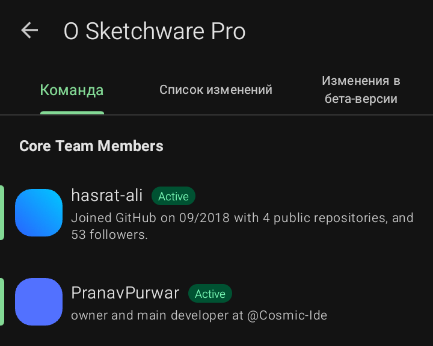
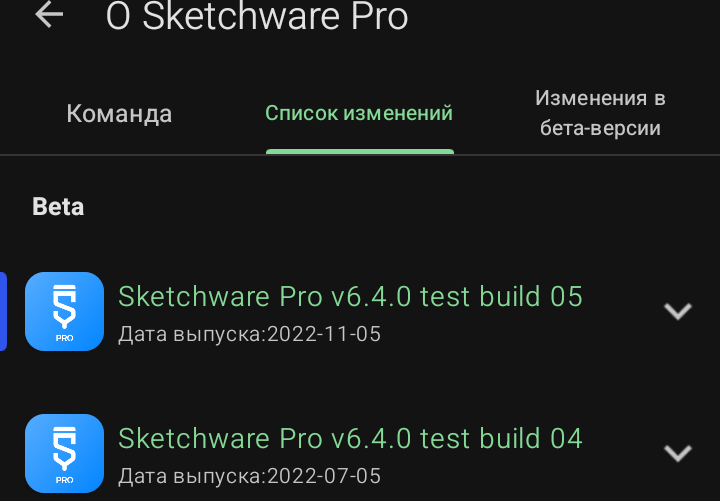
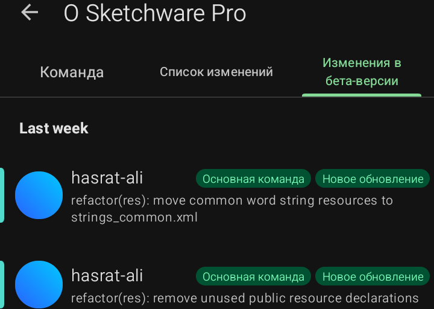

Раздел «О Sketchware Pro» (Информация о программе)
Этот раздел доступен из главного меню (три полосы в левом верхнем углу) и содержит информацию о разработчиках и версиях.
- Вкладка «Команда»: список людей, которые работают над созданием и поддержкой Sketchware Pro. Здесь указаны их ники (например, hasrat-ali, PranavPurwar), статус (Active — активен, Inactive — не активен) и ссылки на их профили.

- Вкладка «Список изменений»: здесь публикуются все обновления программы с указанием даты выпуска. Вы можете увидеть, что нового появилось в версиях 6.4.0, 7.0.0 и т.д.

- Вкладка «Изменения в бета-версии»: показывает, какие правки и улучшения вносятся в данный момент разработчиками. Это техническая информация о том, какие функции находятся в стадии тестирования.

Sketchware Pro 7 · Автор: RasNikGal · © 2026